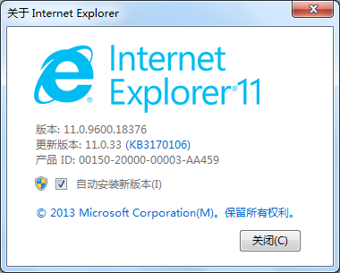

office文件在线浏览控件使用说明书
一、概述
本系统采用国内知名的office文件在线浏览控件--“金格Office控件”(以下简称控件)，是目前国内主流的office在线浏览控件和解决方案。由于此类控件完全依赖于客户端环境，所以请详细阅读完本文再进行安装。
出于对不同用户需求，不同环境的兼容性，本文将对IE浏览器和Chrome浏览器的安装做不同阐述。请在安装前根据本地计算机环境综合评估选择需要安装的控件和中间件。
二、本地环境要求
(1)系统要求
大多数用户使用的是windows操作系统，这也是控件运行的必备要素之一。由于window系统的版本兼容性问题，目前推荐在win 7,win 8下使用，本文演示的系统为win 7 64位。
(2)Office软件要求
本地环境要安装Office应用程序。控件的工作原理需要调用本地office程序加载office文档，最终以插件的形式展现在浏览器中。所以本地必须安装Office应用。首先阐述微软的Microsoft Office的版本要求。
控件对Microsoft Office的支持较好，分别支持Office 2007,Office 2010，本文演示的是Microsoft Office 2010,也是推荐的版本。有些用户使用WPS ,在这里特别提醒，WPS只支持专业版，也不建议使用WPS。更不能同时在同一台计算机上
安装Microsoft Office 和 WPS,这样会造成冲突，这一点特别需要避免，同时避免在同一台电脑上安装多个版本Microsoft Office。需要知晓控件支持.doc,.docx,.xls,.xlsx,.ppt文件格式。
(3)浏览器要求
要求本地计算机安装32位的IE 10、IE11 或32位的Chrome 44。是的所有浏览器均位32位，这是控件需要但同时也增强了兼容性，因为32位的浏览器不仅可以运行在32位的计算机中也可以运行在64位的计算机中。
三、选择安装控件
如果您的电脑上装有32位IE10或32位IE11 请选择IE版控件点此下载金格IE浏览器控件。如果您的电脑上装有32位Chrom 44请选择Chrome版控件点此下载金格Chrome浏览器控件。如果您点电脑同时装有IE，Chrome浏览器则需要分别安装两个版本的控件，当然这种情况不多，也不建议！
特别注意：下载、安装控件的全部过程请关闭杀毒软件，如果报毒请添加为信任软件！！
四、安装步骤
(1)IE版安装步骤
① 确定IE浏览器为32位浏览器

② 把网站添加到可信站点
a) 打开平台网站
b) 添加可信站点
③ 关闭安全软件的广告拦截功能
安装有360或者电脑管家或者别的安全软件，请把他们的广告拦截功能关闭。
④ 关闭ActiveX筛选功能
部分浏览器开启了”ActiveX筛选”，请关闭此功能，去掉勾。
⑤ 设置安全级别里的”ActiveX控件和插件”
⑥ 关闭”弹出窗口阻止程序”
⑦ 下载获取IE版控件 点此下载金格IE浏览器控件
⑧ 解压安装
(2)Chrome版安装步骤
① 在地址栏输入“chrome://version”回车，查看浏览器版本是否正确
② 在地址栏输入“chrome://flags/#enable”回车，找到NPAPI，启用
③ 下载安装程序双击运行 点此下载金格Chrome浏览器控件
④ 安装
⑤ 在地址栏输入“chrome://plugins”回车，找到iWebPlugin,启用，勾选始终运行，重启浏览器
五、卸载
① 获取卸载程序压缩包点此下载金格控件卸载程序
② 解压
③ 双击卸载程序
④ 选择iWebOffice2009卸载
注意：如果卸载重新安装的话请在卸载后重启电脑！
六、程序和帮助文档下载
点此下载IE10
点此下载IE11
点此下载金格IE浏览器控件
点此下载金格Chrome浏览器控件
点此下载金格控件卸载程序
点此下载IE环境测试包
点此下载IE浏览器设置参考.doc
金格控件Chrom使用帮助.docx
金格控件IE使用帮助.doc
客户端Office2010软件宏信任设置.docx
控件运行环境.docx